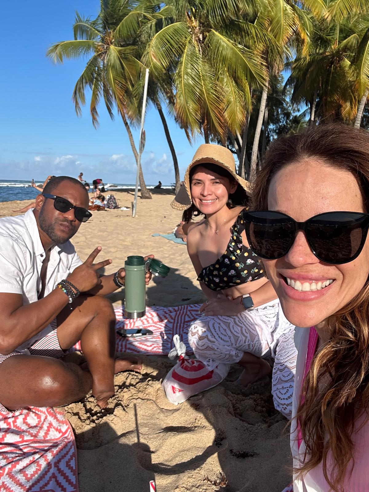

Discover the Flavours of Nicaragua.
Traditional dishes, open-air fritangas, beachfront seafood and memorable dining spots discovered over a decade of visits.

How I Eat in Nicaragua
My philosophy on food in Nicaragua is simple, honest, and completely unpretentious:
"If it's running and open, it's good!"
"Try, try, try the street food. It's good!"
Some of the most memorable meals in Nicaragua don't come with white tablecloths or TripAdvisor badges. They come from evening fritangas with charcoal smoke drifting into the warm breeze, grandmother recipes served on banana leaves, and fresh whole fried fish caught that very morning.
Carne Asada con Gallo Pinto, or Pescado Frito
Charcoal-grilled marinated beef served alongside freshly tossed gallo pinto, fried sweet plantains (maduros), salty fried cheese (queso frito) and crisp cabbage chimichurri. Or a whole red snapper, seasoned with garlic and lime, fried crispy and eaten beachfront with a cold drink.
Hidden Gems by City
Places I return to every visit for genuine hospitality and memorable flavours.
The Rustic
Down-to-earth, genuine local cooking that captures the soul of traditional home-style Nicaraguan dishes. A go-to for hearty portions and authentic flavour.
El Zaguán
Set just behind the historic Cathedral, famous for charcoal-grilled steaks, traditional churrasco, colonial open-air courtyard charm and warm service.
Pescado Frito
A classic roadside and mountain-pass staple: whole fresh fried fish with fried plantains, lime wedges and zesty pickled onions.
Favourite Meals Across Towns
Personal go-to spots where the quality and warmth never change.
My personal favourite restaurant in town. Consistently delicious, welcoming, and honest cooking.
Right along the water with unbeatable fresh fish dishes and easy coastal breeze.
The benchmark for evening dinners and authentic churrasco in the colonial heart.
Vibrant urban dining with authentic Nicaraguan flavours when passing through the capital.

The Beach Restaurants
The best beach restaurants are all right along the main San Juan del Sur bay.
You sit with your feet practically in the sand, watching fishing boats bob on the pacific swell as the golden sunset turns the cliffs violet. Fresh ceviche, grilled red snapper and cold drinks arrive without hurry.
A Cold Toña
Nicaragua's signature lager, served ice cold with a frosted bottle at the end of a long, sun-drenched day on the Pacific coast. Nothing beats it.
Authentic Food Photography In Progress
I don't use generic stock photography or artificial AI food renders. Real photography from each restaurant will be added during upcoming visits.
Dishes & Street Fritangas
Carne asada with fresh gallo pinto, tajadas, queso frito and chimichurri.
Maggie's Restaurant
Exterior, signature plate, and dining room atmosphere in San Juan del Sur.
El Zaguán Courtyard
Colonial brick grills and evening courtyard steaks in Granada.
La Lancha Beachfront
Fresh ceviche and beachfront table views along the bay.
Boaco Mountain Fish
Traditional whole fried fish with lime and fried plantains.
El Chante Managua
Urban capital city dining and local flavours.
Know a Place I Should Try?
Nicaragua's food culture is full of quiet discoveries. If you have a favourite roadside spot, family restaurant or beachfront cookout, let me know.